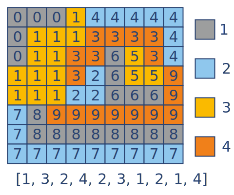

Color Map¶
In mathematics the four color theorem, or the four color map theorem, states that: when given any separation of a plane into contiguous regions and producing a figure called a map, no more than four colors are required to color the regions of the map so that no two adjacent regions have the same color. Two regions are called adjacent if they share a common boundary that is not a corner, where corners are the points shared by three or more regions. For our model we will use a grid with square cells.
You are given a regional map as a grid (matrix). There are N countries located on this map. Each country has a number from 0 to N-1. Two cells are adjacent if they have a common edge. Each country has one or more cells that are connected. Thus you can move between any cells of the country X just using for this adjacent cells. Each cell is marked by the number of its designated country.
You should “color” a map with 4 colors. All of the cells comprising one country should be one color. Adjacent cells of various countries should not have the same color.
The result should be represented as a sequence of numbers 1,2,3 or 4. Each element shows the color of its country matching the index. For example, the 0th element shows the color of country 0. So the result should have N elements.
Input: A map of region as a tuple of tuples with integers.
Output: The color sequence as a tuple/list of integer.
Example:
color_map(((0, 0, 0), (0, 1, 1), (0, 0, 2)) # [1, 2, 3] or [2, 3, 1] or ...
Precondition:
0 < len(region) ≤ 10all(0 < len(row) ≤ 10 and len(row) == len(region[0]) for row in region)One country cells are connected.Country numbers are sequence from 0 to N-1.
Solution:
from itertools import permutations
def color_map(region):
llim, wlim = len(region), len(region[0])
def get_value((i,j)):
return region[i][j]
def get_neighbor((i,j)):
plist = [(i+1,j), (i-1,j), (i,j+1), (i,j-1)]
plist = [get_value(p) for p in plist if 0<=p[0]<llim and 0<=p[1]<wlim]
return set([v for v in plist if v != get_value((i,j))])
adjacence = {}
for i in range(llim):
for j in range(wlim):
v, nb = get_value((i,j)), get_neighbor((i,j))
adjacence[v] = nb if v not in adjacence else (adjacence[v] | nb)
dim = len(adjacence)
for perm in permutations(range(dim)):
color_matrix = [[0]*4 for i in range(dim)]
for i in perm:
for j in range(4):
if color_matrix[i][j] != 0: continue
color_matrix[i][j] = 1
for k in adjacence[i]:
color_matrix[k][j] = -1
break
if all(1 in color_matrix[i] for i in range(dim)):
return [color_matrix[i].index(1)+1 for i in range(dim)]